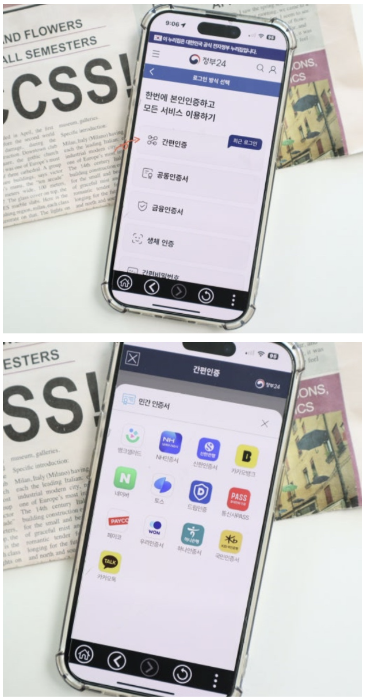
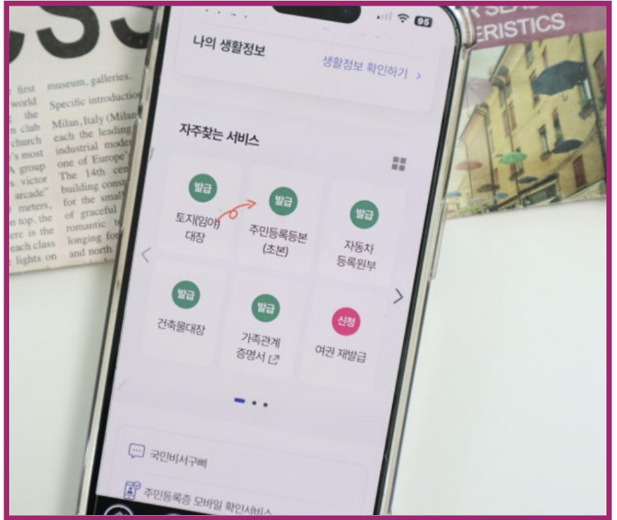
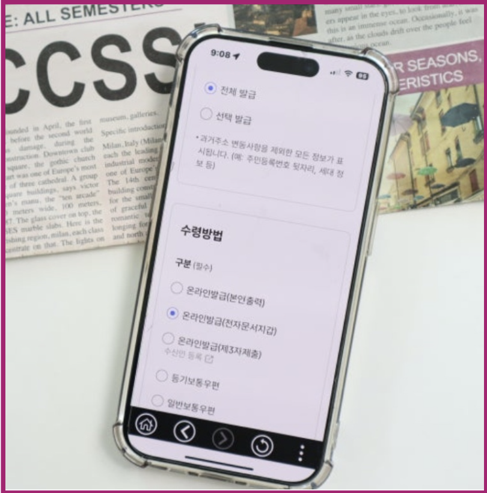
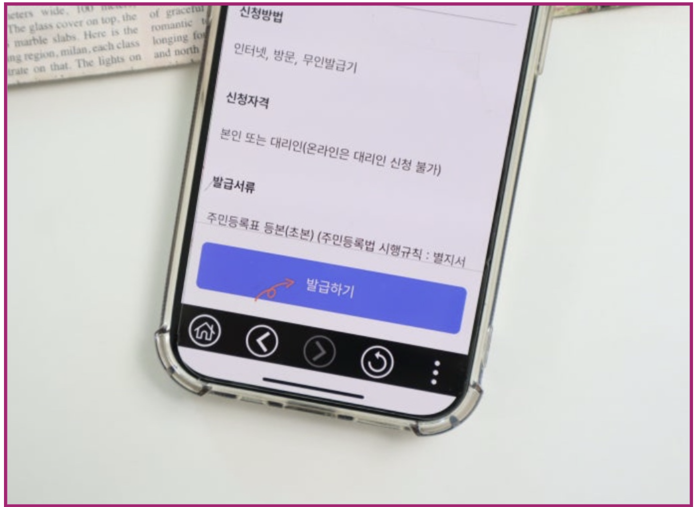
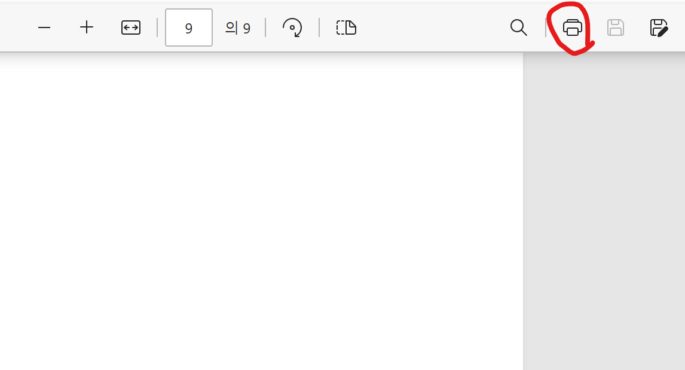

1. 정부24 어플 또는 홈페이지 접속
(
바로가기)
2. 로그인
화면 우측 상단의 로그인 버튼 클릭
공동인증서, 간편인증, 디지털원패스 등으로 로그인

3. 민원 검색 또는 바로가기
검색창에 “주민등록등본” 입력 또는 메뉴에서 선택

4. 민원 신청
‘신청하기’ 클릭, 온라인 발급 선택, 기본 정보 입력

5. 본인 인증 및 수수료 결제
등본 발급은 무료 (일부 민원은 유료)

6. 문서 출력
신청 완료 후 “문서출력” 클릭 → 프린터로 출력
